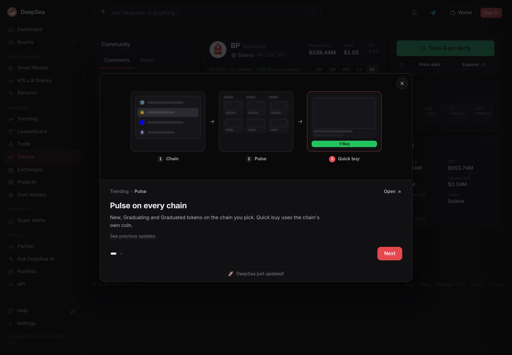
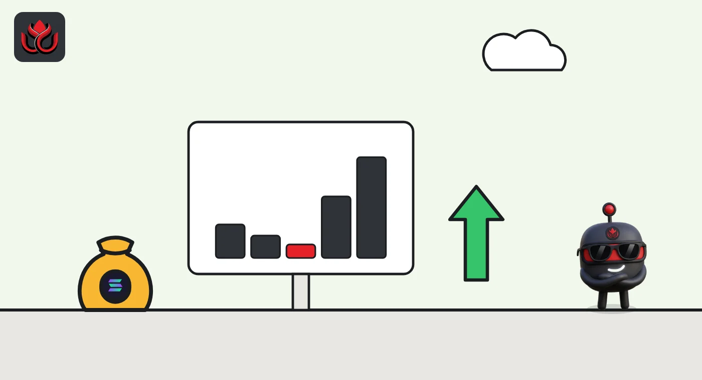
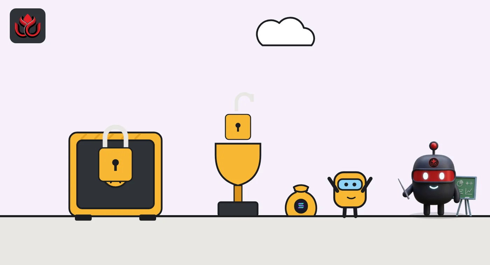

Backpack gave users 25% of BP and insiders nothing. BP is up 285% from its first close
Backpack airdropped 250 million BP to points holders and Mad Lads owners on March 23, 2026, worth about $57 million at CoinGecko's first daily close. No team or investor tokens unlocked, and the next 37.5% of supply unlocks only when the company hits growth milestones.
Key points
- Backpack's BP token launched on Solana on March 23, 2026, with 250 million of 1 billion tokens (25%) going to users: 240 million to points holders and 10 million to Mad Lads NFT holders.
- At CoinGecko's March 23 close of $0.2291, the airdrop was worth about $57.3 million; at $0.8812 on November 2 the same 250 million BP are worth about $220.3 million.
- Backpack has not published how many accounts received BP. The other 75% stays locked: 37.5% unlocks only on growth milestones and 37.5% sits in a treasury until at least a year after a possible IPO.
 What DeepSea's data shows
What DeepSea's data shows
Most BP trading happens off-chain. DeepSea's BP token page showed $3.95 million of on-chain liquidity on Solana and $1.29 million of 24-hour on-chain volume, against $3.2 million of total 24-hour volume on CoinGecko. DeepSea does not yet have holder data for BP, so it cannot show how concentrated the airdropped supply has become.

Data: DeepSea (desea.io), checked November 2, 2026, 8:47 p.m. ET.
What happened
Backpack, a crypto exchange and wallet company from the Solana ecosystem, launched its BP token on March 23, 2026, in a TGE (token generation event: the day a token is created and starts trading). Its official TGE guide lists a total supply of 1 billion BP, with 250 million (25%) in circulation on day one. All of it went to users: 240 million BP to holders of exchange points and 10 million BP to holders of Mad Lads, the company's 10,000-piece NFT collection.
Backpack says no founders, employees or venture investors received tokens at launch. It also says it never held a private sale, public sale or presale, and told users to treat any presale offer as fraud. The company raised $37 million through equity rounds instead.
Backpack's own BP page now marks the launch phase as complete and describes the 250 million BP as airdropped to points holders and Mad Lads holders.
How much it was worth
CoinGecko's price history shows a March 23 close of $0.2291. At that price the airdrop was worth about $57.3 million: roughly $55.0 million for points holders and $2.3 million for Mad Lads holders.
The first days were rough. BP closed at $0.1926 on March 24 and $0.1394 on March 26. It kept sliding into late May, when CoinGecko records its all-time low of $0.1179. Then the trend turned. On November 2 at 8:39 p.m. ET, CoinGecko showed BP at $0.8812, a market value of $220.3 million and a fully diluted value (the price times all 1 billion tokens) of $881.1 million. That is about 285% above the March 23 close, but 47% below the all-time high of $1.65.
Backpack has not disclosed how many accounts or wallets received BP, or how many points converted into one token. We could not confirm either figure on a primary source.
BP price, CoinGecko daily close
US$
Source: CoinGecko historical data and CoinGecko BP page

How Backpack built demand
The points program did most of the marketing. Users earned points for spot and perpetual futures trading volume, with points paid weekly at 9:00 p.m. ET after a Thursday snapshot. Leaderboards reset each season. Season 4 ran for ten weeks and ended on January 28, 2026.
Backpack then added a final round called Epilogue: about 60 million points at 10 million a week. Its stated main purpose was to hand back more than 50 million points that its sybil checks (filters for fake or duplicate accounts) had taken from inauthentic accounts.
Two other hooks helped. Mad Lads holders got a fixed 1% slice. And BP stakers were promised a path to company equity: stake for at least one year and qualify to trade BP for Backpack stock if the company lists or is sold, from a pool of up to 20% of the company.
What is still locked
The other 750 million BP follow rules that are unusual in crypto. Backpack's tokenomics page splits them in two:
- 375 million BP (37.5%), pre-IPO: unlocks only when Backpack hits milestones such as new licenses, new product lines or new markets, not on a calendar. Every unlocked token goes to users.
- 375 million BP (37.5%), corporate treasury: sealed until a year or more after a possible IPO. Team and investors get exposure only through company shares.
CoinGecko still shows a circulating supply of 250 million, so no milestone unlock has shown up yet. On November 2, Backpack's BP page showed 142.11 million BP staked, or 56.8% of the circulating supply.

Timeline
Backpack announces Season 4 of its points program, a ten-week season
Season 4 ends; Epilogue, the last points round before TGE, follows
Backpack confirms 25% of supply at TGE: 24% to points holders, 1% to Mad Lads
Backpack publishes its BP TGE guide (since updated), which now sets out the three-phase tokenomics and equity staking plan
BP launches on Solana; 250 million BP go to users
BP trades at $0.8812 on CoinGecko; 56.8% of circulating BP is staked
Risks and scams
The main supply risk is the 375 million pre-IPO tranche. It is bigger than everything in circulation today, and Backpack decides when a milestone counts. The equity swap also depends on an IPO or a sale that may never happen, and the exchange ratio has not been published.
The only official BP contract on Solana is BPxxfRCXkUVhig4HS1Lh7kZqV6SPJhzfEk4x6fVBjPCy, and official information lives on backpack.exchange. Fake claim sites copy every airdrop. Never connect a wallet from a link sent in a DM or a reply.
LC Insight analysis
This section is our reading of the facts above, not a statement of fact.
- We think Backpack's design fixed the most common airdrop complaint: insiders selling into new holders. With no team or investor tokens unlocking, early selling came from airdrop recipients alone. Even so, BP took about two months to find a floor.
- The equity link is the real hook. A token that may convert into exchange shares behaves more like a call option on the company, which helps explain why more than half the float is staked.
- The weak spot is disclosure. Backpack has not said how many users got BP or how points converted, and the timing of the pre-IPO unlocks is its own call. Clear rules for both would make the model easier to trust.
What's next
- The first growth-triggered unlock from the 375 million pre-IPO tranche
- Published terms for the BP to equity exchange ratio
- Any figure from Backpack on how many accounts received BP
- Changes in the share of BP staked
Frequently asked questions
Who got the Backpack airdrop?
Backpack points holders shared 240 million BP and Mad Lads NFT holders shared 10 million BP. Backpack has not published how many accounts received tokens.
Did Backpack's team or investors get BP?
Not directly, according to Backpack. Their share sits in a corporate treasury that cannot be touched until a year or more after a possible IPO.
When can more BP be unlocked?
375 million BP unlock only when Backpack reaches growth milestones such as new licenses or markets. There is no fixed date.
What is BP staking for?
Backpack says stakers who lock BP for at least one year can become eligible to swap it for company shares at an IPO or acquisition. Terms are not final.
Disclaimer. This article is based on public information and the sources listed below as of the update time shown. It is for information only and is not investment, legal or tax advice. Figures may change as companies and authorities publish new data.
Sources
- Backpack Learn, Backpack TGE: date, distribution, tokenomics and equity staking (updated August 3, 2026)
- Backpack blog, Backpack TGE: 24% to Points, 1% to Mad Lads (January 30, 2026)
- Backpack blog, Backpack Epilogue: final point campaign before TGE (January 29, 2026)
- Backpack Learn, Backpack tokenomics (updated September 28, 2026)
- Backpack, BP token page (checked November 2, 2026)
- CoinGecko, Backpack (BP) price page and historical data (checked November 2, 2026)
- DeepSea, BP token page (checked November 2, 2026)